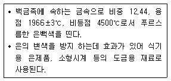
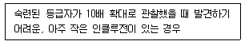

보석감정사(기능사) (2013-07-21 기출문제)
1과목: 보석학일반
1. 귀금속 감정을 위한 시금 작업이 끝난 후 시금석에 묻은 기름 자국을 없애기 위해 사용하는 약품은?
- 과산화수소
- 시안화나트륨
- 암모니아수
- 질산
(정답률: 60%)

2. 다음 중 굴절률이 가장 낮은 보석은?
- 오팔
- 앰버
- 에메랄드
- 토파즈
(정답률: 71%)
3. 장신구 상품의 경제적 특성 중 사회적 거부효과에 대한 설명으로 가장 거리가 먼 것은?
- 스타일 변화가 역사적 연속성에 맞지 않을 때
- 변화의 폭이 너무 클 때
- 기능성이 낮거나 미적으로 열등할 때
- 구매가 동조나 경합의 이유에서 이루어질 때
(정답률: 86%)
4. 광물을 이루고 있는 원자들의 결합방식 중 잔류(판 데르바알스) 결합에 대한 설명으로 맞는 것은?
- 모든 고체의 이온 또는 원자들 간에 존재하는 약한 인력에 의한 결합이다.
- 고체가 이온결합을 이루고 있는 경우에는 잔류 결합의 효과가 극대화 된다.
- 고체가 공유결합을 이루고 있는 경우에는 잔류 결합의 효과가 극대화 된다.
- 원자의 결합이 순전히 잔류 결합에 의한 것으로는 활성기체가 있다.
(정답률: 65%)
5. 다음 중 외부진열장에 진열하기에 가장 부적당한 보석은?
- 다이아몬드
- 문스톤
- 스피넬
- 쿤자이트
(정답률: 57%)
6. 다음에서 설명하는 귀금속은 무엇인가?

- 팔라듐
- 로듐
- 루테늄
- 이리듐
(정답률: 77%)
7. 다음중 합성 오팔에서 관찰할 수 있는 특징으로 옳은 것은?
- 크로스 해치
- 뱀 껍질이나 비늘상의 모양
- 오렌지 껍질 현상
- 이끼 같은 내포물
(정답률: 82%)
8. 다음 중 경도(hardness)가 가장 낮은 보석은?
- 에메랄드
- 크리소베릴
- 칼사이트
- 지르콘
(정답률: 61%)
9. 다음 중 큐빅 지르코니아를 제조하는 합성법은?
- 플레임 퓨전법
- 스컬 용융법
- 초크랄스키법
- 플럭스법
(정답률: 78%)
10. 다음 중 인조 유리에 해당하지 않는 것은?
- 몰다바이트
- 슬로컴 스톤
- 캣차이트
- 메타 비취
(정답률: 58%)
11. 일부 보석에서 발생하는 독특한 광학현상인 특수효과의 원인이 아닌 것은?
- 내포물의 반사
- 결정구조
- 벽개의 발달상태
- 빛의 선택흡수
(정답률: 85%)
12. 천연보석과 외견상 유사하나 실제로 물리적, 화학적 성질이 천연보석과 전혀 다른 것의 총칭은?
- 합성석
- 처리석
- 모조석
- 인조석
(정답률: 78%)
13. 다음 중 광상과 산출되는 보석광물의 연결로 옳지 않은 것은?
- 페그마타이트 광상 - 자수정
- 표사 광상 - 루비
- 광역 변성 광상 - 에메랄드
- 킴벌라이트 광상 - 호박
(정답률: 80%)
14. 터키석(turquoise)의 청색 원인이 되는 화학 성분은?
- 구리(Cu)
- 망간(Mn)
- 철(Fe)
- 코발트(Co)
(정답률: 86%)
15. 다음 중 사방정계에 해당되지 않는 보석광물은?
- 스피넬
- 안달루사이트
- 페리도트
- 탄자나이트
(정답률: 69%)
2과목: 다이아몬드감정법
16. 한 알씩 꿰어나가다 두 줄 이상으로 연결시킨 형태의 진주목걸이 명칭은?
- 컨버터블
- 콤비네이션
- 스프랜더
- 갤럭시
(정답률: 78%)
17. 다음 중 일반적으로 방사선 조사 처리가 행해지는 보석은?
- 루비
- 에메랄드
- 비취
- 토파즈
(정답률: 70%)
18. 귀금속 품위검사 방법 중 정량분석법의 특징으로 옳지 않은 것은?
- 검사하고자 하는 제품 전체의 품위를 검사할 수 있다.
- 비파괴 검사법으로 제품에 손상이 없다.
- 검사원의 전문성을 필요로 한다.
- 고가의 시설, 기자재 비용이 투자되어야 한다.
(정답률: 59%)
19. 결정 성장의 뒤틀림이 집중된 작은 부분으로 실이나 핀포인트 같은 외간을 보일 수도 있는 인클루전은?
- 그레인 센터(Grain center)
- 인터널 그레이닝(Internal graining)
- 레이저 드릴 홀(Laser drill hole)
- 니들(Needle)
(정답률: 63%)
20. 다이아몬드의 클래리티 등급을 결정하는데 가장 적합한 조명은?
- 투과 조명
- 반사조명
- 암시야 조명
- 확산 조명
(정답률: 78%)
21. 마스터 아이 효과(Master-Eye-Effect)에 대한 설명으로 옳은 것은?
- 다이아몬드의 클래리티 등급 결정에 고려해야 할 효과이다.
- 다이아몬드의 목측에 의한 중량 결정에 고려해야 할 효과이다.
- 다이아몬드의 컬러 등급 결정에 고려해야 할 효과이다.
- 다이아몬드의 커트 등급 결정에 고려해야 할 효과이다.
(정답률: 87%)
22. 신속하고 효과적으로 많은 양의 작은 다이아몬드의 중량을 추정하기 위해 사용되어지는 기구는?
- 다이아몬드 체
- 다이아몬드 텀블러
- 다이아몬드 그레이드
- 다이아몬드 게이지
(정답률: 80%)
23. 보우잉법으로 다이아몬드의 테이블 크기를 추정할 때 테이블의 선이 직선인 경우 테이블 크기는 몇 %인가? (단, 스타 패싯의 위치에 따른 조정은 필요없을 경우)
- 53%
- 60%
- 63%
- 67%
(정답률: 74%)
24. 표준 색 범위의 다이아몬드에서 색의 깊이를 판단할 때 가장 고려해야 할 것은?
- 색상과 명도
- 명도와 채도
- 색상과 채도
- 색상과 색조
(정답률: 88%)
25. 검사하려는 다이아몬드가 H 마스터 스톤의 왼쪽에서는 H 마스터 스톤보다 더 진해 보였고, 오른쪽에서는 더 연해 보였다면 이 다이아몬드의 컬러 등급은 무엇인가?
- H
- G
- I
- F
(정답률: 94%)
26. 다이아몬드의 피니시에서 주요 대칭성 요소에 해당되지 않는 것은?
- RG
- WG
- T/oc
- C/oc
(정답률: 75%)
27. 다이아몬드가 질소를 불순물로 가지고 있을때 무슨 색을 띠는가?
- 녹색
- 청색
- 무색
- 황색
(정답률: 87%)
28. 다음 중 다이아몬드 작도시 적색과 녹색을 함께 사용하여 작도하는 것은?
- 노트, 브루즈, 그레인 센터
- 핀포인트, 니들, 크리스털
- 내추럴, 엑스트라 패싯, 어브레이전
- 캐비티, 레이저 드릴 홀, 노트
(정답률: 86%)
29. 다음 중 마스터 스톤의 퍼빌리언 깊이로 가장 알맞은 것은?
- 71~75%
- 61~65%
- 51~55%
- 41~45%
(정답률: 90%)
30. 다음 중 다이아몬드를 구성하는 탄소 원자의 결합방식은?
- 금속결합
- 이온결합
- 잔류결합
- 공유결합
(정답률: 93%)
3과목: 보석감별법
31. 다음 중 다이아몬드를 돌리면서 관찰할 수 있는 방법으로 크라운, 거들, 퍼빌리언을 전체적으로 관찰할 수 있는 방법은?
- 페이스-업법
- 프로파일법
- 페이스-다운법
- 퍼빌리언-업법
(정답률: 68%)
32. 8grain의 다이아몬드를 캐럿(carat) 중량으로 환산하면 얼마인가?
- 1.0ct
- 1.5ct
- 2.0ct
- 2.5ct
(정답률: 85%)
33. 다음에서 설명하는 클래리티 등급으로 옳은 것은?

- IF
- VVS1
- VS1
- SI1
(정답률: 53%)
34. 12배의 접안렌즈와 3배의 대물렌즈로 구성된 현미경은 몇 배 까지 확대가 되는가?
- 3배
- 12배
- 15배
- 36배
(정답률: 95%)
35. 광물에서 생길 수 있는 최고의 광택으로 헤마타이트, 파이라이트 등에 나타나는 광택은?
- 금속광택
- 금강광택
- 유리광택
- 견사 광택
(정답률: 73%)
36. 합성 청색 쿼츠를 컬러필터로 검사 시 어떤 색이 관찰되는가?
- 청색
- 황색
- 적색
- 무반응
(정답률: 84%)
37. 황색 아이도크레이즈에 나타날 수 있는 흡수 스펙트럼은?
- 410nm 라인
- 464nm 라인
- 500nm 라인
- 610nm 라인
(정답률: 77%)
38. 어떤 보석의 다색성을 검사한 결과 이색성을 나타내었다. 이 결과만으로 판단할 수 있는 것은?
- 이 보석은 일축성의 복굴절성 보석이라 판단할 수 있다.
- 이 보석은 이축성의 복굴절성 보석이라 판단할 수 있다.
- 이 보석은 단굴절성 보석이라 판단할 수 있다.
- 이 보석은 복굴절성 보석이라 판단할 수 있다.
(정답률: 79%)
39. 비중액 사용시 주의사항으로 옳지 않은 것은?
- 비중액의 변색을 방지하기 위하여 구리조각을 넣어 놓는다.
- 비중액은 환기가 잘 되는 곳에서 사용하여야 한다.
- 비중액의 정확도를 점검하기 위하여 수시로 비중액의 색깔을 관찰해야 한다.
- 비중액은 가연성이 있으므로 높은 열, 불꽃 등에 가까이 하지 않는 것이 좋다.
(정답률: 80%)
40. 분광성 검사에 대한 설명으로 옳지 않은 것은?
- 분광기를 사용하여 천연보석의 특징적인 스펙트럼, 보석의 색상처리여부 등을 검사하는 방법이다.
- 투과법은 빛이 보석의 위쪽에서부터 밑으로 투과되도록 하여 관찰하는 방법이다.
- 반사법은 보석의 투명도에 따라 외부 반사법과 내부 반사법으로 나눌 수 있다.
- 라인, 밴드, 컷오프 등을 조사 한다.
(정답률: 78%)
41. 다음 중 레드링 검사를 통하여 감별할 수 있는 것은?
- 루비와 합성루비의 더블릿
- 가닛과 유리의 더블릿
- 오일처리 된 에메랄드
- 오팔과 수정의 더블릿
(정답률: 75%)
42. 다음의 특수효과 중 그 발생 원인이 다른 것은?
- 이리데센스
- 래브라도레센스
- 어벤츄레센스
- 아둘라레센스
(정답률: 61%)
43. 굴절계를 사용하여 얻을 수 있는 보석의 광학적 특성으로 옳지 않은 것은?
- 단굴절과 복굴절의 구별
- 광학부호 확인
- 광학 특성인 일축성 및 이축성의 확인
- 다색성 검사
(정답률: 80%)
44. 열반응 검사의 용도가 아닌 것은?
- 각 보석에 따른 독특한 냄새의 검사
- 플라스틱 처리 여부의 검사
- 탄산염 포함 여부의 검사
- 왁스 처리 여부의 검사
(정답률: 84%)
45. 진주를 생성방법에 따라 분류할 때 진주층이 없이 표면이 거칠고 화염 구조를 보이며 대부분 핑크색을 띠는 진주는?
- 시스트 진주
- 골드 진주
- 블리스터 진주
- 콩크 진주
(정답률: 87%)
4과목: 보석가공기법
46. 보석감별법 중 침적(담금액) 검사에 대한 설명으로 옳지 않은 것은?
- 침적 검사는 보석을 물이나 침적액에 담그어 보석 표면의 반사작용을 줄여 검사하는 방법이다.
- 침적 검사시 용기는 내포물이나 색이 없는 무색투명한 유리를 사용한다.
- 침적액은 관찰하려는 보석과 가장 가까운 비중을 가진 용액을 사용한다.
- 침적 검사는 보석의 내포물, 접합 여부, 확산 처리 등을 관찰할 수 있는 검사 방법이다.
(정답률: 68%)
47. 내포물 검사의 목적으로 적합하지 않는 것은?
- 천연보석과 합성보석의 구별
- 보석의 인공처리 여부 감별
- 보석의 생성과정과 환경의 이해
- 보석의 발색 원인을 관찰
(정답률: 70%)
48. 코발트에 의해 발색 되는 합성 청색 스피넬의 자외선 형광 반응은?
- 장파 - 적색 , 단파 - 청백색
- 장파 - 청백색, 단파 - 적색
- 장파 - 무반응, 단파 - 청백색
- 장파 - 적색, 단파 - 무반응
(정답률: 67%)
49. 다음 중 편광기에 의한 검사에서 불스-아이가 관찰되는 보석은?
- 사파이어
- 자수정
- 토파즈
- 에메랄드
(정답률: 72%)
50. 다음 중 투명한 외관을 갖는 유색 보석이 아닌 것은?
- 라피스 라줄리
- 스포듀민
- 앰버
- 토파즈
(정답률: 73%)
51. 정수법으로 비중을 측정할 때의 주의사항으로 옳지 않은 것은?
- 중량 측정시 쇠그물 고리가 비이커 내측에 닿게 한다.
- 보석 표면에 공기방울이 있으면 가볍게 두들겨 기포를 없앤다.
- 보석을 완전히 가라앉혀서 표면장력을 방지한다.
- 작은 보석은 상대오차가 커지므로 너무 작은 중량의 보석은 피한다.
(정답률: 89%)
52. 다음 중 거들 위의 표면 부분을 커트해서 조각하는 보석 조각 기법은?
- 큐벳
- 인탈리오
- 셰비
- 카메오
(정답률: 65%)
53. 다음 중 5각형, 10각형을 연마하는데 주로 사용되는 인덱스 기어는?
- 32 인덱스 기어
- 48 인덱스 기어
- 64 인덱스 기어
- 80 인덱스 기어
(정답률: 85%)
54. 다음 중 세팅된 보석의 크기를 측정할 수 있는 기구는?
- 레버리지 게이지
- 버니어 캘리퍼스
- 모 게이지
- 스크류 마이크로미터
(정답률: 86%)
55. 다음 중 아게이트 가락지 가공작업의 공정 순서가 올바른 것은?
- 절단 - 천공 - 그라인딩 - 샌딩 - 광택 - 세척
- 절단 - 그라인딩 - 샌딩 - 천공 - 광택 - 세척
- 절단 - 샌딩 - 그라인딩 - 천공 - 광택 - 세척
- 절단 - 천공 - 샌딩 - 그라인딩 - 광택 - 세척
(정답률: 82%)
56. 원석의 한 부분에만 색이 있는 경우 보석 전체에 색이 고르게 퍼져있는 것처럼 보이기 위해서는 색이 있는 부분을 어디에 위치되게 연마하여야 하는가?
- 테이블
- 거들
- 큐릿
- 베즐
(정답률: 65%)
57. 보석의 광택작업에 사용되는 다이아몬드 분말의 메시(#) 선택으로 옳지 않은 것은?
- 벽개가 심한 보석은 고운 메시(#)를 사용한다.
- 무색 투명한 보석은 고운 메시(#)를 사용한다.
- 규격이 큰 보석은 거친 메시(#)를 사용한다.
- 경도가 높은 보석은 거친 메시(#)를 사용한다.
(정답률: 60%)
58. 다음 중 땜 작업 시 사용되는 용제(flux)의 구비조건으로 옳지 않은 것은?
- 땜의 융점보다 낮은 온도에서 용해되어야 한다.
- 유동성과 침투력이 좋아야 한다.
- 땜보다 비중이 높아야 한다.
- 땜과 바탕 금속의 흡착력을 양호하게 해야 한다.
(정답률: 76%)
59. 캐보션형으로 연마된 스타 사파이어나 캐츠아이 세팅에 가장 많이 이용되는 난물림은 무엇인가?
- 채널 난물림
- 집시 난물림
- 난발 난물림
- 조각 난물림
(정답률: 57%)
60. 다음 중 표준 라운드 브릴리언트 형의 각 부분 패싯의 개 수로 옳은 것은?
- 스타 패싯 = 16 패싯
- 베즐 패싯 = 8 패싯
- 퍼빌리언 메인 패싯 = 16 패싯
- 로우어 거들 패싯 = 8 패싯
(정답률: 75%)